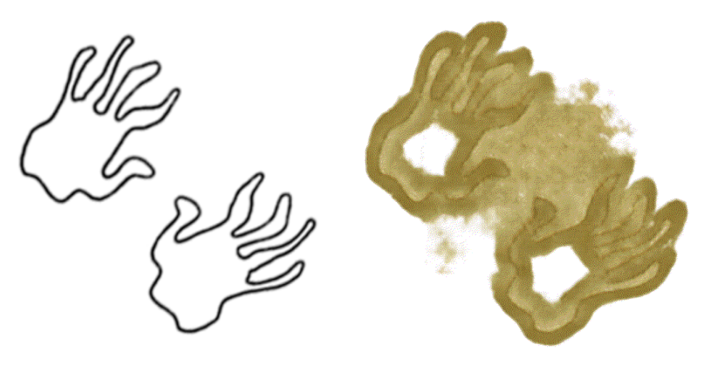
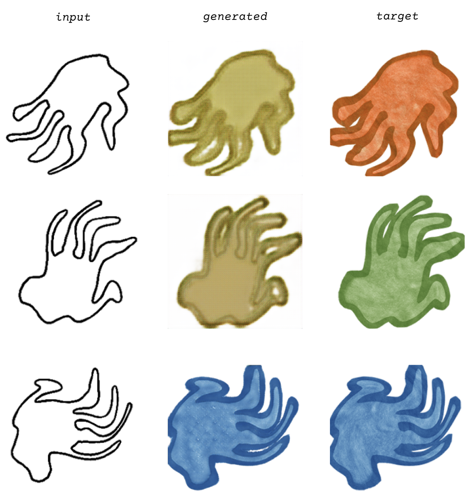

Ji Woo Kim
“Flaming Trees” is inspired by The Vegetarian by Han Kang. In the novel, Yeong-hye, a protagonist who refuses to eat meat due to past traumas, ultimately develops a profound desire to become a tree. In part three, “Flaming Trees”, Yeong-hye describes a dream to her sister in which she is standing on her hands, with roots growing from them into the ground.
Although Yeong-hye’s story is seen as tragic and self-destructive, there’s a paradoxical liberation in her attempt to escape human violence through metamorphosis. To glimpse the transformation she dreamed of, I sought to document the moment, starting by physically tracing outlines of hands, scanning and digitally altering the images, and printing negatives to create cyanotypes. From these, a print was selected, data-augmented, and translated using pix2pix.

